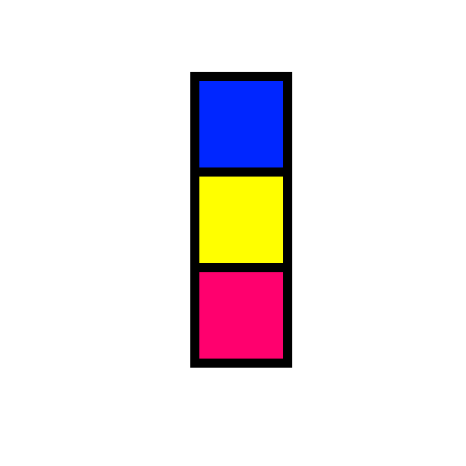

| |
Коллекция матричных игр |
|  | Игра "Столбики" |
Идея заимствована из древней компьютерной игры, которая работала под управлением DOS.
Фигурки в форме столбиков, которые состоят из трех квадратов, расположенных вертикально, друг под другом, случайного цвета, падают сверху в прямоугольный стакан шириной 10 и высотой 20 клеток. (1) .
В полете игрок может менять расположение цветных квадратов в столбце и двигать его по горизонтали.
Также можно «сбрасывать» фигурку, то есть ускорять ее падение, когда решено, куда фигурка должна упасть.
Фигурка летит до тех пор, пока не наткнется на другую фигурку или на дно стакана.
После падения, все квадраты, граничащих с квадратами такого же цвета по вертикали, горизонтали и диагонали уничтожаются. Все квадраты, выше уничтоженных, опускается на одну клетку.
Игра заканчивается, когда новая фигурка не может поместиться в стакан.
Игрок получает очки за каждый уничтоженный квадрат, поэтому его задача - составлять столбики цвет к цвету не заполняя стакан (по вертикали) как можно дольше, чтобы таким образом получить как можно больше очков.